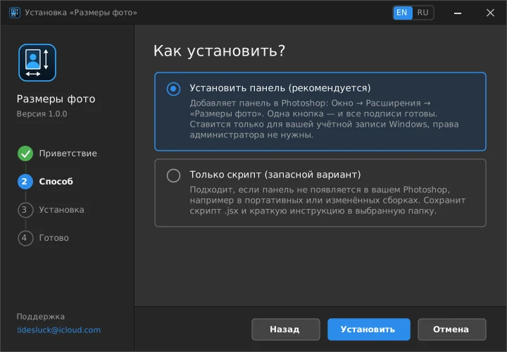
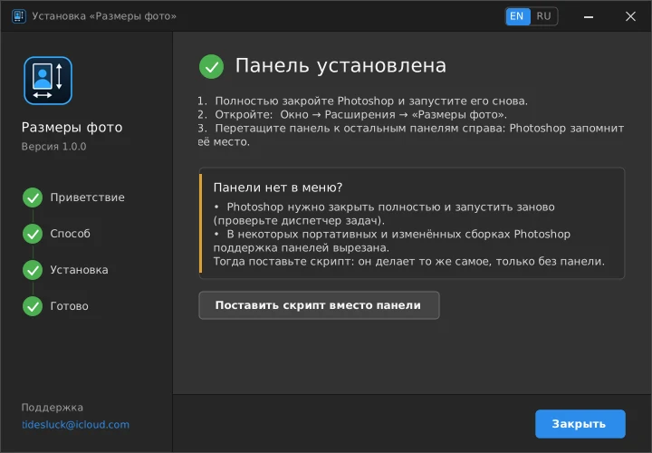
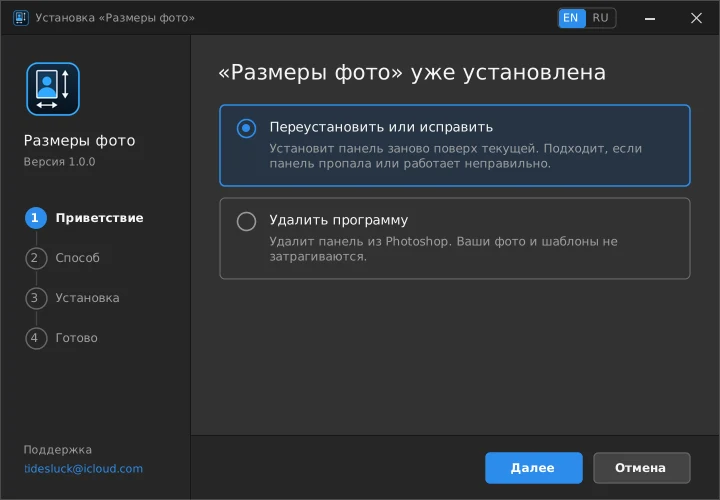

Плагин для Photoshop
Подписи размеров фото в Photoshop одной кнопкой
Панель сама находит все фото на листе, считает размер в миллиметрах и рисует размерные стрелки с подписями. Подходит для листов с фото на документы: 3×4, 3,5×4,5, 9×12, 10×15 и любые другие размеры. Подписи остаются частью растра.
- Windows 10 и 11
- Photoshop CC 2015 и новее
- Бесплатно
- Без Adobe Cloud
- 0,3 МБ
Как это работает
Три шага вместо ручной разметки
Каждый размер считается по самому слою, ничего вводить не нужно.
Установите
Запустите установщик и перезапустите Photoshop. Панель появится в меню Окно → Расширения → Размеры фото.
Откройте шаблон
Внизу фоновый слой листа, поверх него слои с фото любого размера. Можно двигать и дублировать как обычно.
Нажмите «Добавить подписи»
Высота и ширина каждого фото подписаны в миллиметрах. Это один шаг истории: отмена по Ctrl+Z.
Возможности
Сделано под работу с листами
Без ручных линий, без калькулятора и без лишних настроек.
Любой размер
3×4, 35×45, 10×15 или нестандартный: размер определяется по границам слоя.
Высота и ширина у каждого фото
Высота сбоку, ширина снизу: стрелки, выносные линии и цифры, как на чертеже.
Часть растра
Подписи лежат в группе слоёв «Размеры». После сохранения в JPG или PNG они остаются на картинке.
Настройки под себя
Высота цифр, расстояние до фото, толщина линий, сторона подписи. Значения запоминаются.
Умный отбор слоёв
Пропускает фон, слои на весь лист, текстовые и корректирующие слои. Слой с именем на «_» исключается вручную.
Без облака и аккаунта
Работает офлайн, не требует Adobe Creative Cloud и входа в учётную запись.
Установка
Выберите, что скачать
Все три варианта делают одно и то же. Различается только способ запуска.
Установщик
Ставит панель за минуту, на русском и английском, с удалением из «Приложений». Права администратора не нужны.
Скачать установщикПанель вручную
Для Mac и тех, кто любит копировать файлы сам. Внутри архива пошаговая инструкция.
Скачать архивТолько скрипт
Если в вашей сборке Photoshop нет панелей. Запускается через «Файл → Сценарии → Обзор».
Скачать скриптТак выглядит установщик



Вопросы
Частые вопросы
Панели нет в меню «Расширения». Что делать?
Полностью закройте Photoshop (проверьте диспетчер задач) и запустите заново. Панель находится в Окно → Расширения → Размеры фото.
В некоторых портативных и модифицированных сборках поддержка панелей вырезана. Тогда используйте скрипт: он делает то же самое, только запускается через «Файл → Сценарии».
Какие версии Photoshop поддерживаются?
Панель рассчитана на Photoshop CC 2015 и новее. Скрипт работает везде, где есть меню «Файл → Сценарии».
Windows показывает предупреждение при запуске установщика
У файла нет платной цифровой подписи, поэтому SmartScreen может написать «Windows защитила ваш компьютер». Нажмите «Подробнее», затем «Выполнить в любом случае». Установщик работает только в вашей учётной записи, ничего в системе не меняет и не требует прав администратора.
Какие слои подписываются?
Все видимые слои выше самого нижнего (фонового). Пропускаются слои на весь лист, текстовые и корректирующие слои, слои меньше 5 мм и слои, имя которых начинается с «_». Размеры считаются по разрешению документа, поэтому в шаблоне должно быть указано верное разрешение, например 300 пикс/дюйм.
Как удалить?
Запустите установщик ещё раз и выберите «Удалить программу» или откройте «Параметры → Приложения». Если ставили вручную, удалите папку PhotoSizeLabels из папки расширений.
Интерфейс только на русском?
Установщик двуязычный. Кнопки панели и единица на подписях («мм») пока на русском. Единицу можно заменить на свою в настройках скрипта, параметр unitText.
Это бесплатно? Можно ли делиться?
Пользоваться можно бесплатно, в том числе в коммерческой работе. Распространять нельзя: выкладывать копии, пересобирать, перепродавать. Лучше отправьте ссылку на эту страницу. Условия в файле LICENSE в репозитории.
Подписи размеров за один клик
Скачайте установщик, и следующий лист будет готов за секунды.
Скачать установщик